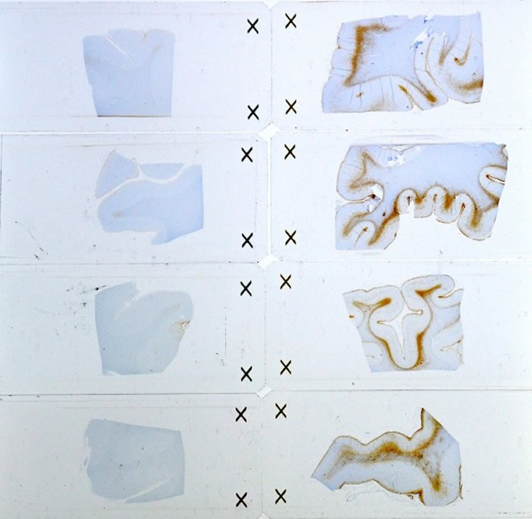

Invisible Wounds of War Now Able to be Seen
Source: USU.
Study identifies biological changes in the brain due to blast related TBI.
Scientists have discovered a unique pattern of scarring in the brains of deceased service members who were exposed to blast injury that differs from those exposed to other types of head injury. This new research was published online June 9 in Lancet Neurology, “Characterisation of Interface Astroglial Scarring in the Human Brain after Blast Exposure: a Post-mortem Case Series.”
“Our findings revealed those with blast exposure showed a distinct and previously unseen pattern of scarring, which involved the portion of brain tissue immediately beneath the superficial lining of the cerebral cortex – the junction between the gray and white matter – and the vital structures that are adjacent to the cavities within the brain that are filled with cerebrospinal fluid. Those areas of the brain, damaged by blast, suggest that they may be correlated with the symptoms displayed by those who sustained a traumatic brain injury, or TBI,” said Dr. Daniel Perl, study senior author and professor of Neuropathology at the Uniformed Services University of the Health Sciences. “This scarring pattern also suggests the brain has attempted to repair brain damage from a blast injury.”
To better understand these blast brain injuries, researchers from the Uniformed Services University of the Health Sciences (USU), the Department of Defense Joint Pathology Center and the University of Colorado’s School of Medicine, examined brain tissue specimens derived from deceased service members, who had been exposed to a high explosive blast injury and had suffered several persistent symptoms. The researchers examined the brain tissues from five service members with remote blast exposures, as well as brain tissues of three service members who died shortly after severe blast exposures. They also compared these results with brain tissues from civilian (non-military) cases, including five with remote impact TBIs, and three cases with no history of a TBI.
“This changes the earlier paradigm of ‘battle injury’ and demonstrates unique and specific biological changes in brains due to these injuries,” said Perl, who also serves as director of USU’s Center for Neuroscience and Regenerative Medicine TBI Brain Tissue Repository.
Military members sustaining a TBI have often reported suffering from persistent post-concussive symptoms, which include a mixture of both neurologic and behavioral disturbances.
“These can include problems such as headaches, difficulty concentrating, sleep disorders, memory problems, depression and anxiety. Despite these prominent symptoms, conventional neuroimaging for mild TBIs typically has not allowed providers to “see” brain abnormalities, leading this to be considered the “invisible wound,” said Perl.
“This publication sheds some light, for the first time, into the nature of the persistent behavioral/ neurologic issues being reported in numerous service members who have been exposed to high explosives. It will certainly stimulate important further research and change how we think about these problems. DoD, through the Military Health System, is at the cutting edge of research dedicated to caring for our troops, and I hope that these findings will point the way into devising more rational approaches to their diagnosis, prevention and treatment,” Perl said.
Read More at NeuroScienceNews